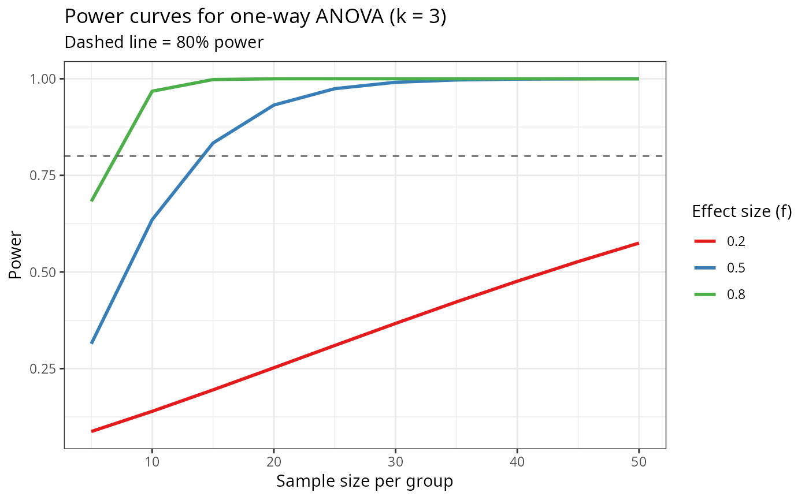

Construction and visualisation of power curves for a balanced one-way ANOVA across a grid of sample sizes and effect sizes. Demonstrates prospective power analysis for GLMM-based designs using the non-central F distribution. Corresponds to Chapter 21 of Stroup et al. (2024).
Details
For a balanced one-way ANOVA with \(k\) treatments and \(n\) observations per treatment, the F-test has non-centrality parameter: $$\lambda = n \sum_{i=1}^{k} \frac{\tau_i^2}{\sigma^2}$$ Under the alternative, the F statistic follows a non-central F distribution \(F(k-1,\, k(n-1),\, \lambda)\). Power is: $$\text{Power} = 1 - F_{k-1,k(n-1),\lambda}(F_{\alpha,k-1,k(n-1)})$$
References
Stroup, W. W., Ptukhina, M., and Garai, S. (2024). Generalized Linear Mixed Models: Modern Concepts, Methods and Applications. CRC Press.
Cohen, J. (1988). Statistical Power Analysis for the Behavioral Sciences, 2nd ed. Lawrence Erlbaum Associates.
Examples
data(DataSet21.1)
## -------------------------------------------------------
## 1. Power function (non-central F)
## -------------------------------------------------------
power_anova <- function(n, k = 3L, f = 0.5, alpha = 0.05) {
df1 <- k - 1L
df2 <- k * (n - 1L)
ncp <- k * n * f^2
fc <- stats::qf(1 - alpha, df1, df2)
1 - stats::pf(fc, df1, df2, ncp = ncp)
}
power_anova(n = 10L, k = 3L, f = 0.5)
#> [1] 0.6352398
## -------------------------------------------------------
## 2. Power curve visualisation
## -------------------------------------------------------
if (requireNamespace("ggplot2", quietly = TRUE)) {
DataSet21.1$effect_label <- paste0("f = ", DataSet21.1$effect_size)
ggplot2::ggplot(
data = DataSet21.1,
mapping = ggplot2::aes(
x = n_per_group,
y = power,
colour = factor(effect_size),
group = factor(effect_size)
)
) +
ggplot2::geom_line(linewidth = 1) +
ggplot2::geom_hline(
yintercept = 0.80,
linetype = "dashed",
colour = "grey40"
) +
ggplot2::scale_colour_manual(
name = "Effect size (f)",
values = c("#E41A1C", "#377EB8", "#4DAF4A")
) +
ggplot2::labs(
title = "Power curves for one-way ANOVA (k = 3)",
subtitle = "Dashed line = 80% power",
x = "Sample size per group",
y = "Power"
) +
ggplot2::theme_bw()
}

## -------------------------------------------------------
## 3. Minimum sample size for 80% power
## -------------------------------------------------------
min_n <- function(f, target_power = 0.80, k = 3L, alpha = 0.05) {
ns <- 2:200
pw <- sapply(ns, power_anova, k = k, f = f, alpha = alpha)
ns[which(pw >= target_power)[1L]]
}
sapply(c(0.2, 0.5, 0.8), min_n)
#> [1] 82 14 7